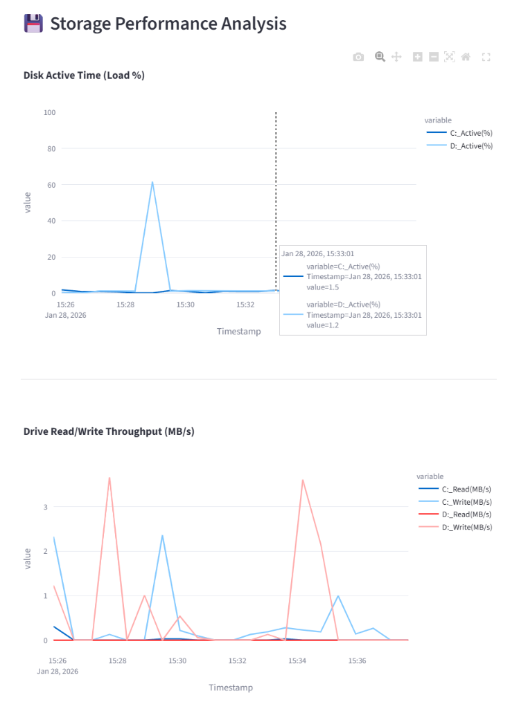

시스템 리소스 모니터 사용자 매뉴얼
이 문서는 실행 파일 또는 Streamlit 앱으로 제공되는 System Resource Monitor를 사용자 관점에서 설명하는 단일 매뉴얼입니다.
빌드된 site/index.html만 열어도 사용 방법을 확인할 수 있도록 구성했습니다.
1. 프로그램 실행
- 프로그램을 실행합니다.
- 모니터링을 시작하려면 왼쪽 패널에서 수집 간격을 설정합니다.
-
Start Monitor (Admin)버튼을 눌러 수집을 시작합니다. -
로그 저장 위치:
C:\SystemLogs - 주요 로그 파일:
Global_Usage_*.csv(고주기 시스템 지표)System_Log_*.csv(프로세스 Top5 요약)

2. 화면 구성
2.1 Control Panel
왼쪽 사이드바에서 다음 항목을 설정합니다.
Global Interval (s): 시스템 지표 수집 주기Process Interval (s): 프로세스 Top5 수집 주기Target Drives: 스토리지 모니터링 대상 드라이브Start Monitor (Admin): 관리자 권한으로 수집 시작Stop Monitor (Logman Only): Logman 세션 중지
2.2 Log File Selection
Upload Log CSV(s): 직접 CSV 업로드Select from C:\SystemLogs: 로컬 저장 로그 선택Time Range: 선택 구간만 분석
3. 대시보드 선택 및 공통 조작
상단 Select Dashboard View에서 원하는 화면을 선택합니다.
- CPU Dashboard
- Memory Dashboard
- Storage (D:)
- Custom Graph
그래프 우측 상단 툴바에서 확대/축소/이동/리셋/이미지 저장이 가능합니다.

4. Storage 대시보드 사용법
Storage 화면은 대용량 로그에서도 동작하도록 차트 품질 옵션을 제공합니다.
Fast: 가장 빠름, 요약 확인용Balanced(기본): 속도와 형태 보존 균형Detailed: 형태 확인 강화Original (slow): 원본 포인트 그대로 표시(대용량에서는 느림)
권장 순서:
- 먼저
Balanced로 전체 추세 확인 - 이상 구간이 있으면
Detailed로 확대 분석 - 최종 검증이 필요할 때만
Original (slow)사용

5. CPU/Memory 대시보드
5.1 CPU Dashboard
- CPU 사용률 추이
- (수집 시) CPU 온도 추이
- 최대/평균 CPU 사용률 지표

5.2 Memory Dashboard
- 메모리 사용률/스왑 추이
- 메모리 Top 프로세스
- 프로세스별 메모리 시계열

6. Custom Graph + 엑셀 내보내기
Custom Graph에서 시각화할 지표를 선택합니다.Export Start Time을 선택합니다.Download as Excel (.xlsx)버튼으로 내보냅니다.

7. 문제 해결
7.1 로그가 보이지 않을 때
C:\SystemLogs폴더가 생성되었는지 확인Start Monitor (Admin)를 관리자 권한으로 실행했는지 확인
7.2 그래프가 비정상적으로 느릴 때
- Storage 화면
Chart Quality를Fast또는Balanced로 변경 Time Range를 좁혀서 다시 확인
7.3 데이터가 비어 보일 때
- 로그 파일 선택이 올바른지 확인
- 로그 수집 시작 시각과 분석 시각이 일치하는지 확인